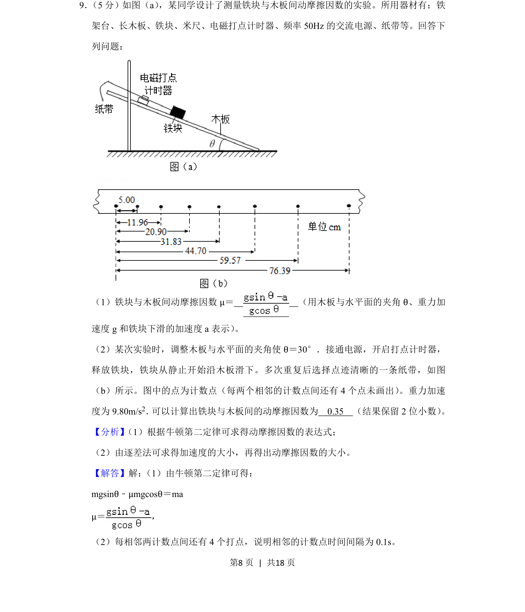
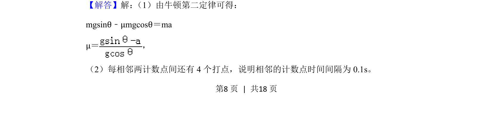
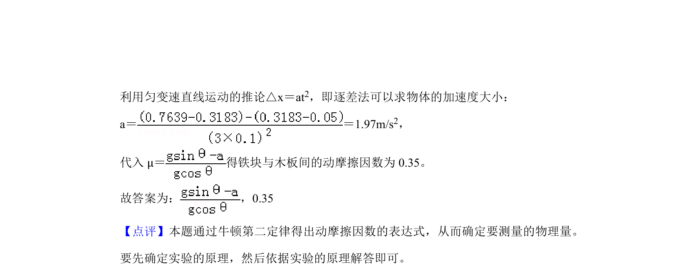

考点：牛顿第二定律 动摩擦因数 逐差法 打点计时器

用牛顿第二定律推导动摩擦因数表达式，并通过纸带逐差法计算加速度求得动摩擦因数


📄 原 PDF 第 8 页：
素材/真题/吉林/2008-2024·（吉林）物理高考真题/2019年高考物理试卷（新课标Ⅱ）（解析卷）.pdf
9． （5分）如图（a） ，某同学设计了测量铁块与木板间动摩擦因数的实验。所用器材有：铁 架台、长木板、铁块、米尺、电磁打点计时器、频率50Hz的交流电源、纸带等。回答下 列问题： （1）铁块与木板间动摩擦因数μ＝ （用木板与水平面的夹角θ、重力加 速度g和铁块下滑的加速度a表示） 。 （2）某次实验时，调整木板与水平面的夹角使θ＝30°．接通电源，开启打点计时器， 释放铁块，铁块从静止开始沿木板滑下。多次重复后选择点迹清晰的一条纸带，如图 （b）所示。图中的点为计数点（每两个相邻的计数点间还有4个点未画出） 。重力加速 度为9.80m/s 2． 可以计算出铁块与木板间的动摩擦因数为 0.35 （结果保留2位小数） 。
【分析】 （1）根据牛顿第二定律可求得动摩擦因数的表达式； （2）由逐差法可求得加速度的大小，再得出动摩擦因数的大小。 【解答】解： （1）由牛顿第二定律可得： mgsinθ﹣μmgcosθ＝ma μ＝ ， （2）每相邻两计数点间还有4个打点，说明相邻的计数点时间间隔为0.1s。